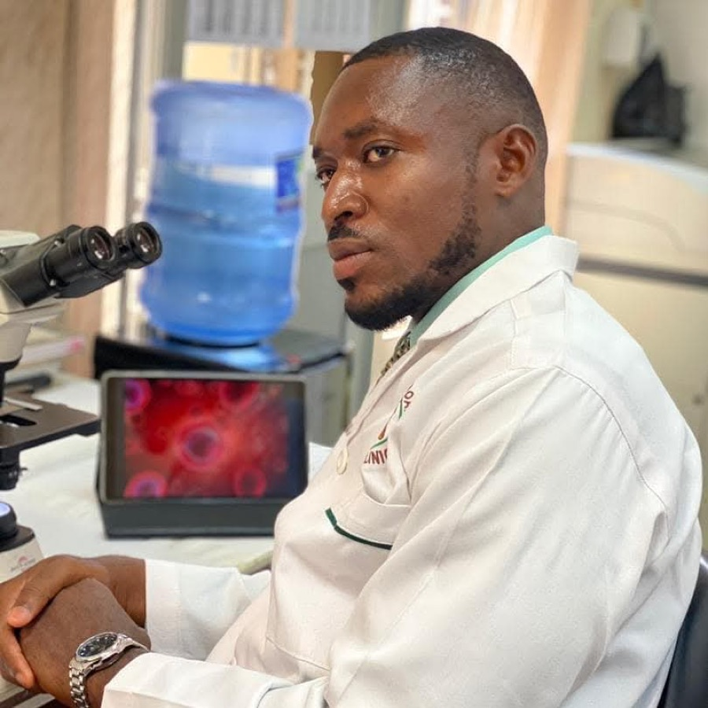

Why Bill Gates Is Investing Millions in Alzheimer's Research
One of the world's most famous philanthropists put roughly $100 million of his own money into the fight against dementia. Here's what he funded, why it's personal, and what it means for the rest of us.

Key takeaways
- ~$100 million, personal money: Gates's Alzheimer's giving comes from his own pocket — not the Gates Foundation.
- It started with family: his father, Bill Gates Sr., had Alzheimer's and died in 2020.
- The bet is on diagnosis: a big chunk targets affordable, blood-based early-detection tests.
- No supplement endorsement exists: any ad claiming Gates backs a brain pill is a scam.
- You don't have to wait: proven daily habits and studied nutrients can support memory now.
Bill Gates has reportedly committed around US$100 million of his personal money to fighting Alzheimer's disease — money that comes from him directly, not from the Bill & Melinda Gates Foundation. He announced the first major piece, a US$50 million investment in the Dementia Discovery Fund, in 2017, and has since added tens of millions more toward early-detection research. For someone whose foundation work has focused on infectious disease and global poverty, it was a notable, deeply personal pivot.
Why did Bill Gates start funding Alzheimer's research?
The motivation is partly personal. Gates has spoken openly about watching his father, Bill Gates Sr., live with Alzheimer's before his death in 2020 — an experience he has called heartbreaking. On his blog, Gates Notes, he described the disease as one of the few problems that money and modern science had not yet meaningfully cracked, and noted the enormous and growing cost of dementia care to families and health systems alike.
He framed his giving as an attempt to bring fresh ideas, more data and sharper diagnosis to a field that, in his view, had been stuck for too long. As Time and STAT News reported at the time, his interest was both emotional and analytical — the combination that tends to drive his philanthropy.
What is the Dementia Discovery Fund?
The Dementia Discovery Fund is a venture fund built to back early-stage companies and unconventional scientific approaches to dementia. Much Alzheimer's research has historically centered on the "amyloid hypothesis" — the idea that sticky amyloid plaques in the brain drive the disease. The fund's goal, as covered by Alzheimer's Research UK, was to broaden the search and finance riskier, more diverse ideas that traditional funding often overlooks. Gates's $50 million made him one of its prominent backers.
Why is Gates so focused on early diagnosis?
In 2018, Gates put a reported $30 million-plus into the Diagnostics Accelerator, a program run with the Alzheimer's Drug Discovery Foundation (ADDF). The aim: develop affordable, blood-based tests that could flag Alzheimer's far earlier and far more cheaply than today's brain scans and spinal taps. His reasoning is straightforward — if you can't reliably detect a disease early, you can't run good trials of treatments, and you can't help patients before too much damage is done.
Gates has also partnered with the Alzheimer's Association through efforts such as its "Part the Cloud" initiative, and has backed projects applying artificial intelligence to Alzheimer's data. Across all of it, the through-line is the same: better, earlier diagnosis as the lever that could unlock everything else.
Does any of this involve a supplement or brain pill?
No — and this matters. Gates's funding has gone to research funds, diagnostic programs and academic science, not to consumer products. He has never endorsed, created or recommended a memory supplement. If you've seen an ad, a "leaked interview," or a fake news article claiming Bill Gates is behind a miracle brain pill, it is a scam using his name and face without permission. Treat those the way you'd treat any too-good-to-be-true pitch: close the tab.
So what can you actually do for your memory now?
While researchers chase treatments and earlier tests, there's a lot the evidence already supports for everyday memory. The fundamentals come first: protect your sleep, move your body most days, eat for your brain, manage stress and stay mentally and socially engaged. Our full guide on how to improve your memory walks through the habits with the strongest backing.
It also helps to know what's normal. Misplacing your keys is not the same as the changes seen in dementia — our breakdown of memory loss vs. normal aging can help you tell ordinary slips from a genuine warning sign worth raising with a doctor.
When diet leaves gaps, certain nutrients have a real research base for supporting memory and focus — among them citicoline, bacopa monnieri, phosphatidylserine and the core B-vitamins. Rather than buying each one separately, many people prefer a single, well-dosed formula.
COMPLEX
Advanced Memory Complex — our top-rated formula for 2026
It pairs a fully transparent, clinically-dosed label — citicoline, bacopa, phosphatidylserine and B-vitamins — with a 60-day money-back guarantee. (It has nothing to do with Bill Gates; it's simply the supplement our editors rate highest.)
See Today's Price →What does Gates's bet tell us about where research is heading?
Two themes stand out. First, the field is widening beyond a single theory of the disease — funding like the Dementia Discovery Fund deliberately spreads bets across new mechanisms. Second, early detection has become the strategic priority: cheaper, simpler tests could change who gets into trials, how soon, and how successfully. Whether or not any one program pays off, the direction of travel is clear, and it's one of the more hopeful stories in a notoriously difficult field.
Frequently asked questions
How much has Bill Gates invested in Alzheimer's research?
Reports point to roughly US$100 million of his own money — including a US$50 million investment in the Dementia Discovery Fund (2017) and a reported US$30 million-plus toward the Diagnostics Accelerator (2018), with continued backing of related efforts since.
Why did Bill Gates start funding Alzheimer's research?
Partly personal: his father, Bill Gates Sr., had Alzheimer's and died in 2020. Gates also viewed the disease as a costly, under-cracked problem where fresh ideas, data and better diagnosis could speed progress.
Does Bill Gates endorse any memory supplement?
No. There is no credible evidence he endorses, created or recommends any memory supplement. Ads claiming he does are scams that misuse his name and image. His funding went to research and diagnostics, not consumer pills.
What is the Dementia Discovery Fund?
A venture fund that invests in early-stage companies and novel approaches to dementia, aiming to broaden research beyond the dominant amyloid theory. Gates put US$50 million into it in 2017.
Support your memory while the science catches up
You can't wait on a cure — but you can act on what's proven today. See the memory formulas our editors rate highest for 2026.
See the Top 5 Memory Formulas →Related: Bill Gates's fight against dementia · Gates on his father's Alzheimer's · The Diagnostics Accelerator · Billionaires funding Alzheimer's research · How to improve your memory · Best memory formulas of 2026